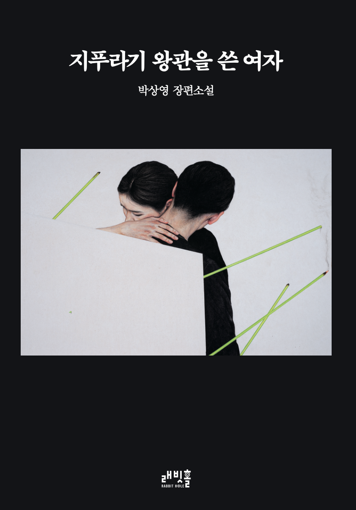

Novelist, Screenwriter, Essayist
Author of the novel Love in the Big City and writer and creator of its television adaptation · Translated into 16 languages · International Booker Prize longlist
Seoul, Republic of Korea
Contact
Latest

Latest Novel
The latest novel by Sang Young Park, published in Korea in July 2026. A propulsive mystery spanning Korea and Japan, where a Zainichi woman’s death unearths a chaebol dynasty’s buried history.
Book detailsAbout
Sang Young Park is a South Korean novelist, screenwriter, and essayist based in Seoul. With wit, emotional precision, and an unsparing eye for contemporary life, his work explores intimacy, identity, family, and the changing textures of urban experience. His bestselling novel Love in the Big City was longlisted for the International Booker Prize, the Dublin Literary Award, and the Prix Médicis étranger, and was adapted for both film and television. Park wrote and created the television series, which was broadcast globally in over 190 countries. His works have been translated into 16 languages and are available in over 30 countries and territories.
Work
Books
Drama
Awards
Media Adaptations
Movie
Drama
Theatre
Selected International Appearances
Translated Edition
Works translated into 16 languages and available in over 30 countries and territories.
Love in the Big City
Lie Like Lines
On Trust
No Snacking Tonight
The Tears of an Unknown Artist, or Zaytun Pasta
100% Pure Rest
Press Coverage
"A runaway bestseller poised to capture a worldwide readership."
"Captures the ambiguous landscape inhabited by South Korean gays, of being both visible and unacknowledged."
"Destined to be a global, queer cult classic."
"A novel about navigating life as a young gay man in Korea — electric and deeply felt."
"Captures the experience of being both visible and unacknowledged."
"One of the best LGBTQ books of 2021."
"Anton Hur's gorgeous translation captures the wit and bite of Park's voice."
Education
Dongguk University — MA
Creative Writing
Sungkyunkwan University — BA
Media Communication, French
Languages
Social Media